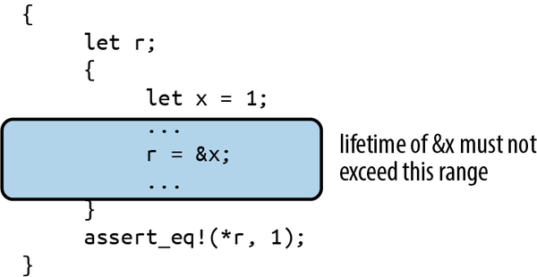
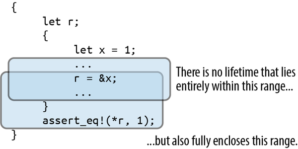
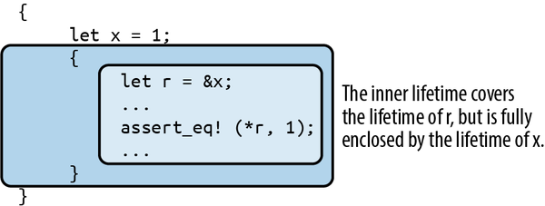
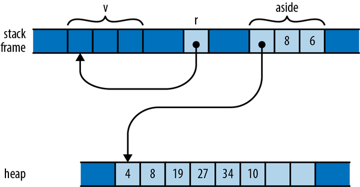
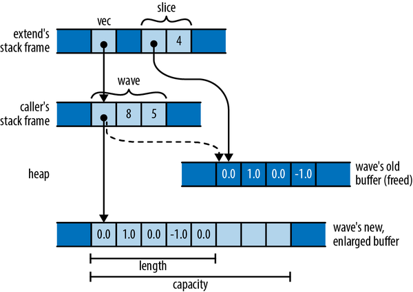
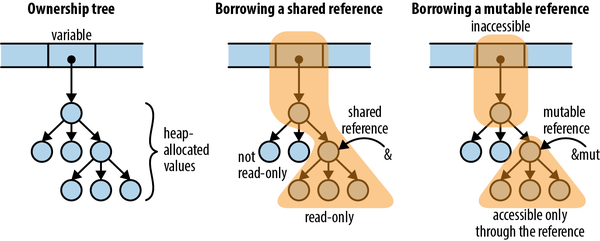
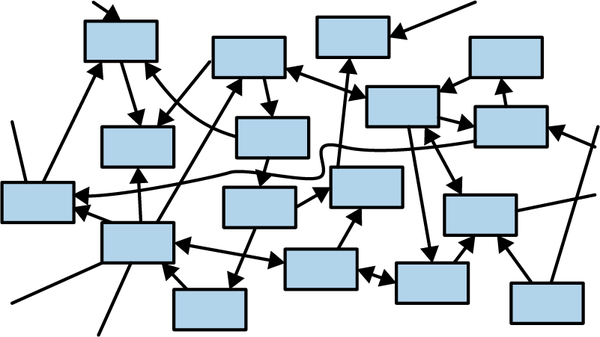

第五章 参考文献
图书馆无法提供新的能力或技能。
马克·米勒
在最后一章中，我们讨论了几种指针类型 Box<T> 、 Vec<T> 和 String 。这些指针都包含一个指向堆中数据的指针，该数据由这些指针所拥有。一个值的“所有者”负责处理该值的生命周期结束后的清理工作：释放一个 Box<T> 指针的同时，也会释放 T 指针。Rust 还定义了另一种非所有权指针类型——引用。引用对所指值的访问方式是读取或读写，但这种访问通常是临时的。引用并不赋予对值的所有权。在 Rust 中，创建引用被称为“借用”：你借来的东西最终必须归还给它的所有者。
这些引用本身并没有什么特别之处——在底层，它们只不过是一系列地址而已。不过，保护这些引用所遵循的规则在 Rust 语言中还是相当新颖的；在其它编程语言中，你几乎从未见过类似的规定。虽然这些规则是 Rust 中最难掌握的方面，但它们所避免的那些常见错误数量之多令人惊讶，而它们对多线程编程的影响则相当显著。这真是 Rust 的一次大胆尝试啊。
在本章中，我们将介绍在 Rust 语言中引用是如何工作的；会说明引用、函数以及用户定义的类型如何结合使用生命周期信息来确保它们能够被安全地使用；还会列举一些常见的错误类型，这些错误可以通过编译时的处理来避免，而不会影响到程序的运行性能。
参考基础
例如，假设我们想要创建一个表格，列出那些具有致命影响力的文艺复兴时期艺术家以及他们著名的作品。Rust 的标准库中包含了哈希表这种数据类型，因此我们可以这样定义我们的类型：
usestd::collections::HashMap;typeTable=HashMap<String,Vec<String>>;
换句话说，这是一个哈希表，它将艺术家名称映射到其作品的名称列表。你可以使用 for 循环来遍历 HashMap 中的条目，因此可以编写一个函数来输出 Table 的内容。
fnshow(table:Table){for(artist,works)intable{println!("works by {artist}:");forworkinworks{println!(" {work}");}}}
构建并打印表格的过程非常简单：
fnmain(){letmuttable=Table::new();table.insert("Gesualdo".to_string(),vec!["many madrigals".to_string(),"Tenebrae Responsoria".to_string()]);table.insert("Caravaggio".to_string(),vec!["The Musicians".to_string(),"The Calling of St. Matthew".to_string()]);table.insert("Cellini".to_string(),vec!["Perseus with the head of Medusa".to_string(),"a salt cellar".to_string()]);show(table);}
而且一切运行都很正常：
$cargorunRunning `/home/jimb/rust/book/fragments/target/debug/fragments`works by Gesualdo:many madrigalsTenebrae Responsoriaworks by Cellini:Perseus with the head of Medusaa salt cellarworks by Caravaggio:The MusiciansThe Calling of St. Matthew$
不过，如果你已经阅读了前一章中关于移动操作的章节，那么 show 的定义应该会引发一些疑问。具体来说， HashMap 并不等于 Copy ——因为 HashMap 拥有一个动态分配的表，所以不可能等于 Copy 。因此，当程序调用 show(table) 时，整个结构体会被移动到函数体内，导致变量 table 未初始化。（此外， show(table) 还会以不确定的顺序遍历其包含的内容，所以如果你看到的是不同的顺序，也不必担心。）如果调用代码现在尝试使用 table ，将会遇到麻烦。
...show(table);assert_eq!(table["Gesualdo"][0],"many madrigals");
Rust 抱怨说 table 已经无法被使用了：
error: borrow of moved value: `table`|20 | let mut table = Table::new();| --------- move occurs because `table` has type| `HashMap<String, Vec<String>>`,| which does not implement the `Copy` trait...31 | show(table);| ----- value moved here32 | assert_eq!(table["Gesualdo"][0], "many madrigals");| ^^^^^ value borrowed here after movenote: consider changing this parameter type in function `show` to borrow insteadif owning the value isn't necessary|7 | fn show(table: Table) {| ---- ^^^^^ this parameter takes ownership of the value| || in this functionhelp: consider cloning the value if the performance cost is acceptable|35 | show(table.clone());| ++++++++
编译器提示我们，我们可以创建引用或克隆该值来避免这个问题。在这种情况下，正确的解决方案是使用引用，这样就能在不影响所有权的情况下访问该值。引用有两种类型：
-
共享引用意味着你可以读取该引用所指向的对象，但不能对其进行修改。不过，你可以同时拥有多个对某个特定值的共享引用。例如，表达式&e就代表了e值的共享引用；如果e的类型为T，那么&e的类型就为&T，这种关系被称为“引用T”。而共享引用本身就是Copy。 -
如果你有一个对某个值的可变引用，那么你既可以读取该值，也可以修改它。不过，同时不能有其他任何形式的引用指向该值。表达式&mut e会返回一个对e值的可变引用；你可以将其类型表示为&mut T，读作“ref muteT”。可变引用不是Copy。
你可以将共享引用与可修改引用之间的区别视为一种在编译时强制执行“多个读取者或单个写入者”规则的方式。实际上，这一规则不仅适用于引用本身，也适用于被引用值的所属对象。只要存在一个对值的共享引用，那么甚至该值的所属对象也无法对其进行修改；该值会被锁定，无法被任何人修改。例如，在 show 正在操作该值时，无法修改 table 。同样，如果有一个对值的可修改引用，那么就可以独占该值，直到该可修改引用不再存在为止。将共享操作和修改完全分离，对于内存安全来说是非常重要的，这一点我们会在本章后续部分详细讨论。
在我们的示例中，打印功能不需要修改表格本身，只需要读取表格的内容即可。因此，调用者可以传递对表格的共享引用给打印函数，如下所示：
show(&table);
这些引用都是非所有权的指针，因此 table 变量仍然是整个结构的所有者； show 只是暂时借用了它而已。当然，我们需要调整 show 的定义以使其与 show 保持一致，不过你仔细观察的话就能发现它们之间的区别了。
fnshow(table:&Table){for(artist,works)intable{println!("works by {artist}:");forworkinworks{println!(" {work}");}}}
在原始版本中，我们的外部循环会获取 HashMap 的所有权并消耗它。而在新版本中，我们采用了共享引用来访问 HashMap 。对 HashMap 的共享引用进行迭代时，会生成每个键值对的共享引用： artist 从 String 变为 &String ，而 works 则从 Vec<String> 变为 &Vec<String> 。
内部循环也有类似的修改。通过共享对向量的引用来进行迭代操作，这样可以使得对向量元素的访问也成为共享的。因此， work 现在变成了 &String 。在这个函数中，没有任何地方的所有权发生了变更；只是将非所有权的引用传递给了其他变量而已。
现在，如果我们想要编写一个函数来对每位艺术家的作品进行排序，那么单一的参考对象就远远不够了，因为单一的参考对象无法被修改。因此，排序函数需要接收一个可修改的表格引用对象。
fnsort_works(table:&mutTable){for(_artist,works)intable{works.sort();}}
而且我们必须要通过它：
sort_works(&muttable);
当我们以一种方式将值传递给函数，从而将值的所有权转移给函数时，我们说这是通过值传递的方式传递。如果我们而是将值的引用传递给函数，那么我们就说是通过引用传递的方式传递。例如，我们修改了 show 函数，使其能够接受值的引用形式，而不是值本身。许多编程语言都区分了这两种传递方式，但在 Rust 语言中这一点尤为重要，因为它清楚地表明了所有权是如何被影响的。
处理参考资料
前面的例子展示了引用的一个非常典型的用法：让函数能够访问或操作一个结构体，而无需拥有该结构体的所有权。不过，引用其实可以发挥更灵活的作用，下面让我们来看一些例子，以便更详细地了解其中的原理。
隐式引用与显式引用
如果你熟悉 C++中的引用概念，那么你会注意到 Rust 中的引用与之非常相似。最重要的是，它们都只是对机器级别的地址的引用而已。不过，它们的语法略有不同。
在 C++中，引用是通过类型转换隐式创建的，同时，对引用所指对象的引用操作也是隐式进行的：
// C++ code!intx=10;int&r=x;// initialization creates reference implicitlyassert(r==10);// implicitly dereference r to see x's valuer=20;// stores 20 in x, r itself still points to x
在 Rust 语言中，引用是通过 & 运算符显式创建的，而解引用则通过 * 运算符来实现。
// Back to Rust code from this point onward.letx=10;letr=&x;// &x is a shared reference to xassert_eq!(*r,10);// explicitly dereference r
要创建一个可变的引用，可以使用 &mut 运算符：
letmuty=32;letm=&muty;// &mut y is a mutable reference to y*m+=32;// explicitly dereference m to set y's valueassert_eq!(*m,64);// or to get y's current value
在 Rust 语言中，引用被广泛应用，因此该语言通常支持用引用代替值进行操作。例如，打印一个引用与打印其值效果相同。所以，无论是 artist 是一个值，还是对某个值的引用， println!("works by {artist}:"); 打印它们的结果都是一样的。正如我们已经提到的，对引用进行循环遍历时，会返回对内部值的引用。在这两种情况下，都不需要使用显式的 * 。
. 运算符在需要的情况下也会自动解引用其左操作数。
letaria=Anime{name:"Aria: The Animation",bechdel_pass:true,};letanime_ref=&aria;assert_eq!(anime_ref.name,"Aria: The Animation");// Equivalent to the above, but with the dereference written out:assert_eq!((*anime_ref).name,"Aria: The Animation");
. 运算符在需要调用方法时，也可以隐式地借用其左操作数的引用。例如， Vec 的 sort 方法需要一个可变的向量引用，因此这两个调用是等效的。
letmutv=vec![1973,1968];v.sort();// implicitly borrows a mutable reference to v(&mutv).sort();// equivalent, but more verbose
简而言之，Rust 语言会自动创建引用，并在某些地方对引用进行解引用操作，以简化代码。在其他所有情况下，为了清晰起见，需要使用 & 和 * 运算符。
分配引用信息
为变量分配一个引用，就意味着该变量现在指向了一个新的位置。
letx=10;lety=20;letmutr=&x;ifb{r=&y;}assert!(*r==10||*r==20);
引用 r 最初指向 x 。但是，如果 b 为真，那么代码会指向 y ，如图 5-1 所示。

图 5-1：参考点 r 现在指向了 y ，而不是 x
这种行为似乎太过明显，以至于无需赘述：当然， r 现在指向 y ，因为我们已经将 &y 存储在了 y 中。不过我们指出这一点是因为 C++中的引用行为截然不同。如前所述，在 C++中，将值赋给一个引用时，该值会被存储在该引用的对象中。一旦 C++引用被初始化，就无法再指向其他对象了。
关于参考文献的说明
Rust 允许对引用进行引用：
structPoint{x:i32,y:i32,}letpoint=Point{x:1000,y:729};letr:&Point=&point;letrr:&&Point=&r;letrrr:&&&Point=&rr;
为了清晰起见，我们列出了各种引用类型。不过，您也可以省略这些说明；因为 Rust 本身就能自行推断出这些引用类型的内容。 . 运算符的作用是将尽可能多的引用类型用于找到目标对象。
assert_eq!(rrr.y,729);
为了纪念，这些引用按照图 5-2 所示的方式排列。

图 5-2. 一系列引用关系的链条
因此，表达式 rrr.y 在 rrr 类型的指导下，实际上会经过三次引用才能到达 Point ，然后再获取其 y 字段的值。
比较参考文献
就像 . 运算符一样，Rust 的比较运算符也能“看到”任意数量的引用情况：
letx=10;lety=10;letrx=&x;letry=&y;letrrx=℞letrry=&ry;assert!(rrx<=rry);assert!(rrx==rry);
最后的断言是有效的，尽管 rrx 和 rry 指向的是不同的值（即 rx 和 ry ）。因为 == 运算符会遍历所有的引用，并在最终的目标 x 和 y 上进行比较。这几乎总是你期望的行为，尤其是在编写通用函数时。如果你真的想要知道两个引用是否指向同一块内存，可以使用 std::ptr::eq ，它可以将这两个引用视为地址来进行比较。
assert!(rx==ry);// their referents are equalassert!(!std::ptr::eq(rx,ry));// but occupy different addresses
请注意，比较中的操作数必须具有完全相同的类型，包括引用类型也不例外：
assert!(rx==rrx);// error: type mismatch: `&i32` vs `&&i32`assert!(rx==*rrx);// this is okay
参考文献绝不会是无效的。
在 Rust 中，引用永远不会为 null。没有类似于 C 语言的 NULL 或 C++的 nullptr 这样的语法。引用没有默认初始值（在任何类型的情况下，都必须先初始化变量才能使用它），而且 Rust 不会将整数转换为引用（除非在 unsafe 代码中使用）。因此，你不能将零值转换为引用。
在 C 和 C++代码中，经常使用空指针来表示值的缺失情况。例如， malloc 函数会返回一个指向新内存块的指针，或者当内存不足时返回 nullptr 。在 Rust 中，如果你需要一个表示“有引用”或“没有引用”的值，可以使用 Option<&T> 类型。在机器层面，Rust 将 None 表示为空指针，而 Some(r) 则代表有引用的状态。其中 r 表示非零地址，因此 Option<&T> 与 C 或 C++中的可空指针一样高效，尽管它更安全：因为其类型要求在使用之前必须检查其是否为空。
借用这些引用来指代任意的表达式
虽然 C 和 C++只允许将 & 运算符应用于特定类型的表达式，但 Rust 允许对任何类型的表达式的值进行引用操作。
fnfactorial(n:usize)->usize{(1..n+1).product()}letr=&factorial(6);// Arithmetic operators can see through one level of references.assert_eq!(r+&1009,1729);
在这种情况下，Rust 会创建一个匿名变量来保存表达式的值，并指向该变量。这个匿名变量的生命周期取决于你对该引用的处理方式。
-
如果你在
let语句中立即将引用赋值给某个变量（或者将其作为某个结构体或数组的组成部分进行分配），那么 Rust 会使得这个匿名变量在初始化let所赋值的变量存在期间一直有效。在上面的例子中，Rust 确实对r所引用的对象进行了这样的处理。 -
否则，这个匿名变量会一直存在于当前语句的末尾。在我们的例子中，那个用于保存
1009的匿名变量只会在assert_eq!语句的末尾才被销毁。
如果你习惯于使用 C 语言或 C++语言，那么这种写法可能会容易出错。但请记住，Rust 永远不会允许你编写会导致引用失效的代码。如果引用在变量的生命周期之外仍然被使用，Rust 会在编译时立即提示你这个问题。此时，你可以修改代码，将引用保存在具有适当生命周期的命名变量中。
高效的指针使用
到目前为止，我们所提到的所有引用都是简单的地址。而对切片的引用则有所不同。这种引用包含了切片的起始地址以及其长度。由于切片引用具有这两个字段，因此它们比其他引用要大一些。这就是为什么它们被称为“胖指针”的原因。
在 Rust 中还有一种类型的指针，即指向特质对象的指针，这些指针使用 dyn 关键字来表示。我们将在“使用 dyn”这一章节中详细讨论这些内容。
除了能够携带一些额外的数据之外，切片和特性对象引用的行为与其他我们在这章中介绍过的引用类型相同：它们并不拥有自己的被引用对象，也不允许其被引用对象被销毁或失效。此外，切片和特性对象引用还可以被修改或共享，等等。
参考安全指南
正如我们迄今为止所介绍的，在 C 或 C++中，引用看起来和普通的指针没什么不同。但这种做法并不安全；那么，Rust 是如何控制引用这一特性的呢？或许，了解这些规则的最佳方式就是尝试打破这些规则。
为了传达这些基本概念，我们将从最简单的情况开始讲解。首先，我们会展示 Rust 如何确保在单个函数体内正确使用引用。接着，我们会探讨如何在函数之间传递引用，并将这些引用存储在数据结构中。这需要为这些函数和数据类型指定生命周期参数，我们会对此进行解释。最后，我们会介绍 Rust 提供的一些简化常用使用模式的快捷方式。在整个过程中，我们会展示 Rust 如何指出存在问题的代码，并常常给出解决方案。
借用局部变量
这是一个相当明显的例子。你不能引用一个局部变量，然后将其带出该变量的作用域。
{letr;{letx=1;r=&x;}assert_eq!(*r,1);// bad: reads memory `x` used to occupy}
Rust 编译器拒绝编译这个程序，并给出了详细的错误信息：
error: `x` does not live long enough|7 | r = &x;| ^^ borrowed value does not live long enough8 | }| - `x` dropped here while still borrowed9 | assert_eq!(*r, 1); // bad: reads memory `x` used to occupy| ----------------- borrow later used here
Rust 的抱怨是， x 只有在其内部代码块结束时才会被执行，而对其的引用却要在外部代码块中才被使用，这是违反规则的。
Rust 试图为程序中的每个引用分配一个符合其使用场景要求的生命周期。所谓生命周期，指的是一个代码片段的持续时间，在这个时间内，对该代码片段的引用是安全的：比如一个语句、一个表达式、某个变量的作用域等。
首先，对 x 的引用必须不会超过 x 本身的寿命，如图 5-3 所示。
在 x 超出其作用域之后，这个引用就变成了一个悬空的指针。我们可以说，该变量的生命周期必须包含或关联于从该变量中获得的引用所对应的生命周期。

图 5-3. 允许的生命周期长度
其次，这个引用在整个生命周期内都必须一直存在，直到最后一次被使用，如图 5-4 所示。
当我们在示例的末尾解引用 r 时，Rust 认为该引用的生命周期必须延续到那个点。我们说，引用的生命周期必须包含或控制其所有的使用场景。

图 5-4. 存储在 r 中的参考数据的允许生命周期
第一种约束条件限制了引用对象的生命周期不能过长；而第二种约束条件则限制了其生命周期不能过短。Rust 会尝试为每个引用对象找到一个满足所有这些约束条件的生命周期长度。然而，在我们的例子中，如图 5-5 所示，并不存在符合这些约束条件的生命周期长度。

图 5-5. 一个在其生命周期中存在矛盾约束的参考对象
现在让我们来看一个不同的例子，在这个例子中，各种约束条件都能得到满足。我们仍然面临类似的约束：引用的生命周期必须受到 x 的限制，同时又能完全包含 r 。不过，由于 r 最后一次使用是在 x 的作用域内，因此存在一个满足这些约束的生命周期，如图 5-6 所示。

图 5-6. 一个引用，其生命周期属于 r 的范围，但位于 x 的范围内。
当您引用某个较大数据结构中的某个部分时，比如向量中的一个元素，这些规则自然而然地就适用了。
letv=vec![1,2,3];letr=&v[1];
由于 v 拥有该向量，而向量又拥有其各个元素，因此 v 的生命周期必然包含引用 &v[1] 的生命周期。同样地，如果你在某个数据结构中存储引用，那么该结构本身的生命周期也必然包含该引用的生命周期。例如，如果你创建了一个由引用构成的向量，那么所有引用的生命周期都必然包含创建该向量的变量的生命周期。
需要注意的是，所谓“生命周期”实际上是一种编译时的概念。它们本质上是 Rust 编译器所设想出来的概念而已。
-
在运行时，生命周期不会占用任何空间。它们没有任何内存表示形式。在运行时，一个引用实际上只是一个地址而已。 -
生命周期并不能控制数值的持续时间。当给变量重新赋值或者变量超出作用域时，变量中的值就会被删除。而生命周期无法改变这一点。 -
生命周期并不会影响编译后的代码。Rust 编译器会利用这些生命周期信息来确保代码的安全性，之后就会丢弃这些信息。
我们在本节描述的过程，实际上就是 Rust 语言的借用检查器用来验证代码的方式。当引入更多的语言特性时——比如数据结构和函数调用——就会产生新的约束条件，但基本原则保持不变：首先，要理解程序使用引用方式所带来的约束；然后，找到能够满足这些约束的生命周期。这与 C 和 C++程序员所采取的方式并没有太大区别；不同的是，Rust 语言本身了解这些规则，并会强制执行这些规则。
接收作为函数参数的引用参数
当我们传递一个对函数的引用时，Rust 是如何确保该函数能够安全地使用这个引用的呢？假设我们有一个函数 f ，它接受一个引用并将其存储在全局变量中。我们需要对此进行一些修改，但初步的版本如下：
// This code has several problems, and doesn't compile.staticmutSTASH:&i32;fnf(p:&i32){STASH=p;}
在 Rust 中，相当于全局变量的东西被称为“静态变量”：这种变量在程序启动时被创建，并一直存在直到程序终止。（就像其他任何变量一样，Rust 的模块系统决定了静态变量的可见性，因此它们在生命周期中只是“全局”的，而不是真正全局的。）我们将在第八章中讨论静态变量，但现在我们先来指出一下上面这段代码没有遵守的一些规则：
-
每个静态变量都必须进行初始化。
-
可变的静态变量本质上并不具备线程安全性（毕竟，任何线程都可以在任何时候访问这些静态变量）。即使是在单线程程序中，这些变量也可能出现复入问题。因此，你只能在一个
unsafe块内访问可变的静态变量。在这个示例中，我们并不关心这些具体问题，所以只需添加一个unsafe块即可继续处理其他内容。
经过这些修改之后，我们现在得到以下结果：
staticmutSTASH:&i32=&128;fnf(p:&i32){// still not good enoughunsafe{STASH=p;}}
我们几乎完成了。为了查看剩余的问题，我们需要列出一些 Rust 语言允许我们省略的内容。这里给出的 f 的签名实际上是下面内容的简写形式：
fnf<'a>(p:&'ai32){...}
这里的“生命周期 'a ”（发音为“tick A”）是 f 的生命周期参数。你可以将 <'a> 理解为“对于任何生命周期 'a ”。因此，当我们使用 fn f<'a>(p: &'a i32) 时，实际上是在定义一个函数，该函数接受一个指向具有任意生命周期 'a 的 i32 的引用。
由于我们必须让 'a 具有任意长度，因此如果将其设置为最小长度——即仅包含对 f 的调用，那么事情就会变得简单。不过，这种分配方式其实是一个值得讨论的问题：
STASH=p;
由于 STASH 在整个程序执行过程中一直存在，因此它所持有的引用类型的生命周期也必须保持恒定长度；Rust 将这种生命周期称为 'static 生命周期。但是 p 的引用生命周期是某个 'a ，而 'a 可以是任何值，只要它能包含对 f 的调用。因此，Rust 会拒绝我们的代码。
error: lifetime may not live long enough|3 | fn f(p: &i32) { // still not good enough| - let's call the lifetime of this reference `'1`...5 | STASH = p;| ^^^^^^^^^ assignment requires that `'1` must outlive `'static`
目前看来，我们的函数显然不能接受任何类型的引用作为参数。不过，正如 Rust 所指出的，它应该能够接受具有 'static 生命周期的引用：将这样的引用存储在 STASH 中并不会导致指针指向无效的情况。实际上，以下代码可以顺利编译：
staticmutSTASH:&i32=&10;fnf(p:&'statici32){unsafe{STASH=p;}}
这次， f 的签名表明 p 必须是一个引用，其生命周期为 'static 。因此，将 p 存储在 STASH 中已经没有任何问题了。我们只能对指向其他静态变量的引用应用 f ，但除此之外，没有其他方法可以确保 STASH 不会处于悬空状态。所以我们可以这样写：
staticWORTH_POINTING_AT:i32=1000;f(&WORTH_POINTING_AT);
由于 WORTH_POINTING_AT 是一个静态变量，那么 &WORTH_POINTING_AT 的类型就是 &'static i32 。将 &'static i32 传递给 f 是安全的。
相反，如果我们看到一个具有如下签名的函数： g(p: &i32) （或者参数生命周期明确标注为 g<'a>(p: &'a i32) ），我们就可以判断出该函数不会将参数 p 存储到任何会持续存在的地方。无需去研究 g 的定义；仅从签名就能知道 g 该如何处理其参数。在判断函数调用是否安全时，这一点非常有用。
传递对函数的引用
现在我们已经说明了函数的签名与其实现之间的关联，接下来让我们看看这种关联如何与函数的调用者相关。假设你有如下代码：
// This could be written more briefly: fn g(p: &i32),// but let's write out the lifetimes for now.fng<'a>(p:&'ai32){...}letx=10;g(&x);
从 g 的签名中可以得知，Rust 知道这样并不会在任何情况下导致 p 的变量超出其作用域：包围该调用的生命周期必须适用于 'a 。因此，Rust 为 &x 选择了尽可能短的生命周期——也就是包围 g 调用的生命周期。这样就能满足所有约束条件：它不会超出 x 的作用域，并且能包围整个 g 的调用。所以这段代码通过审查了。
如果我们尝试将 &x 作为参数传递给之前那个需要将参数存储在静态变量中的函数 f ，会怎么样呢？
fnf(p:&'statici32){...}letx=10;f(&x);
这段代码无法编译：引用 &x 的生命周期不能超过 x 的生命周期。但是，当将 &x 传递给 f 时，我们限制了它的生命周期，使其至少与 'static 的生命周期相同。这里根本无法满足所有人的需求，因此 Rust 会拒绝编译这段代码。
返回引用
通常，一个函数会接收一个数据结构的引用，然后返回该结构某部分的引用。例如，这里有一个函数，它返回了一个切片中最小元素的引用。
// v should have at least one element.fnsmallest(v:&[i32])->&i32{letmuts=&v[0];forrin&v[1..]{if*r<*s{s=r;}}s}
我们以常规方式在该函数的签名中省略了生命周期信息。当一个函数接受一个引用作为参数，并且返回另一个引用时，Rust 认为这两个引用的生命周期必须是相同的。如果明确写出这一点，就会变成这样：
fnsmallest<'a>(v:&'a[i32])->&'ai32{...}
假设我们将 smallest 这样称呼：
lets;{letparabola=[9,4,1,0,1,4,9];s=smallest(¶bola);}assert_eq!(*s,0);// bad: points to element of dropped array
从 smallest 的签名可以看出，其参数和返回值必须具有相同的生命周期，即 'a 。在我们的调用中，参数 ¶bola 的生命周期不得超过 parabola 本身，而 smallest 的返回值则至少要与 s 具有相同的生命周期。不存在任何满足这两种约束的生命周期 'a ，因此 Rust 会拒绝这段代码。
error: `parabola` does not live long enough|10 | let parabola = [9, 4, 1, 0, 1, 4, 9];| -------- binding `parabola` declared here11 | s = smallest(¶bola);| -------- borrowed value does not live long enough12 | }| - `parabola` dropped here while still borrowed13 | assert_eq!(*s, 0); // bad: points to element of dropped array| ----------------- borrow later used here
移动 s ，使其生命周期明确包含在 parabola 的修复范围内，这样就能解决问题了：
{letparabola=[9,4,1,0,1,4,9];lets=smallest(¶bola);assert_eq!(*s,0);// fine: parabola still alive}
在函数签名中使用生命周期，可以让 Rust 能够评估你传递给函数的参数与函数返回值的关联情况，从而确保这些参数的使用是安全的。
包含引用的结构
Rust 是如何处理存储在数据结构中的引用的呢？下面就是这个之前讨论过的有错误的程序，只不过这次我们将引用放在了一个结构体内：
// This does not compile.structS{r:&i32,}lets;{letx=10;s=S{r:&x};}assert_eq!(*s.r,10);// bad: reads from dropped `x`
Rust 对引用所施加的安全限制并不会因为我们将引用封装在结构体内部而突然消失。这些限制无论如何都必须适用于 S 。事实上，Rust 是持怀疑态度的：
error: missing lifetime specifier|7 | r: &i32| ^ expected named lifetime parameter
每当某种引用类型出现在另一种类型的定义中时，就必须明确说明其生命周期。你可以这样写：
structS{r:&'statici32,}
这意味着 r 只能指向那些会在程序生命周期内持续存在的 i32 值。这确实有点局限性。另一种方法是为这个类型提供一个生命周期参数 'a ，然后将其用于 r ：
structS<'a>{r:&'ai32,}
现在， S 这种类型也有生命周期了，就像引用类型一样。你创建的每个 S 类型的值都会拥有一个独立的生命周期 'a ，这个生命周期会受到你使用该值的方式的影响。任何存储在 r 中的引用对象的生命周期都应该包含 'a ，而 'a 的生命周期则必须超过那个存储 S 的地方的生命周期。
该赋值操作将 S 存储在一个变量中，该变量的生命周期持续到示例结束为止，这样就限制了 'a 的生命周期不会超过 s 的生命周期。不过，Rust 仍然面临着类似的矛盾约束： 'a 的生命周期不能超过 x 的生命周期，但同时它又必须至少与 s 具有相同的生命周期。显然不存在一个合理的解决方案，因此 Rust 会拒绝执行这段代码。幸好避免了灾难！
当一个具有生命周期参数的类型被嵌入到其他类型中时，它的行为会如何变化呢？
structD{s:S,// not adequate}
Rust 对此表示怀疑，就像我们尝试在不需要指定引用生命周期的情况下将引用赋值给 S 时一样。
error: missing lifetime specifier|8 | s: S, // not adequate| ^ expected named lifetime parameter|
我们不能在这里省略 S 的生命周期参数：Rust 需要知道 D 的生命周期与其在 S 中的引用生命周期之间的关系，这样才能对 D 和普通引用应用与 S 相同的检查机制。
我们可以为 s 提供 'static 的生命周期。这样就可以了：
structD{s:S<'static>,}
Rust 系统给出的错误信息实际上提出了另一种更通用的解决方法。
help: consider introducing a named lifetime parameter|7 | struct D<'a> {8 | s: S<'a>,|
在这里，我们为 D 提供了一个生命周期参数，并将其传递给 S ：
structD<'a>{s:S<'a>,}
通过引入生命周期参数 'a ，并在 s 的类型中使用它，我们使得 Rust 能够让 D 值的生命周期与它所引用的对象的生命周期保持同步。
我们之前已经展示了函数的签名如何揭示该函数如何处理传递给它的引用。现在，我们同样可以了解类型的相关信息：类型的生命周期参数总是能表明该类型是否包含具有有趣生命周期的引用，以及这些生命周期可能是什么。
例如，假设我们有一个解析函数，它接受一个字节切片，并返回一个包含解析结果的结构体：
fnparse_record<'i>(input:&'i[u8])->Record<'i>{...}
无需深入探讨 Record 类型的定义，我们就能明白：当我们从 parse_record 接收到 Record 时，它所引用的内容必定指向我们传入的输入缓冲区，而不会指向其他任何地方（除非是 'static 的值）。
不仅仅是像 S 这样的类型具有生命周期，在 Rust 中，每一种类型都有生命周期。包括 i32 和 String 在内的所有类型都是如此。大多数类型只是被称为 'static ，这意味着这些类型的值可以一直存在，直到用户希望它们消失为止；例如， Vec<i32> 是一种自包含的类型，不需要在某个变量超出作用域之前就被删除。但是像 Vec<&'a i32> 这样的类型则有自己的生命周期，这个生命周期必须在其引用对象仍然存在的时候被删除。
独特的生命周期参数
假设你已经定义了一个结构体，该结构体包含两个引用，如下所示：
structS<'a>{x:&'ai32,y:&'ai32,}
这两个引用都使用了相同的生命周期 'a 。如果你的代码需要执行类似的操作，这可能会成为一个问题。
letx=10;letr;{lety=20;{lets=S{x:&x,y:&y};r=s.x;}}println!("{r}");
这段代码不会产生任何悬空指针。对 y 的引用仍然存在于 s 中，而 s 在 y 之前就超出了作用域。对 x 的引用最终指向了 r ，而 r 不会比 x 更早失效。
不过，如果你尝试编译这段代码，Rust 会报错称 y 的存在时间不够长，尽管显然它确实存在。为什么 Rust 会担心这个问题呢？如果你仔细研究一下这段代码，就能理解其背后的逻辑了。
-
S这两个字段都是对同一个生命周期的引用，因此 Rust 必须找到一个适用于s.x和s.y的单一生命周期。 -
我们分配给
r = s.x，要求'a负责管理r的生命周期。 -
我们将
s.y初始化为&y，并要求'a的持续时间不超过y的持续时间。
这些约束条件是无法满足的：没有任何生命周期的持续时间会短于 y 的作用域，同时也不会长于 r 的作用域。Rust 语言对此表示拒绝。
问题出现的原因是， S 中的两个引用都具有相同的生命周期 'a 。如果修改 S 的定义，使得每个引用都有不同的生命周期，那么问题就解决了。
structS<'a,'b>{x:&'ai32,y:&'bi32,}
根据这个定义， s.x 和 s.y 都有独立的生命周期。我们对 s.x 所做的操作不会影响存储在 s.y 中的内容，因此现在很容易满足这些约束： 'a 可以直接成为 r 的生命周期，而 'b 则可以成为 s 的生命周期。（对于 'b 来说， y 的生命周期也是可行的，但 Rust 会尽量选择最小的生命周期长度。）最终，一切都会变得很合理。
函数的签名可能会产生类似的效果。假设我们有一个这样的函数：
fnf<'a>(r:&'ai32,s:&'ai32)->&'ai32{r}// perhaps too tight
在这里，两个引用参数都使用了相同的生命周期 'a 。这可能会像之前那样，不必要地限制调用者。如果这确实是个问题，你可以让参数的生命周期相互独立。
fnf<'a,'b>(r:&'ai32,s:&'bi32)->&'ai32{r}// looser
这样做的缺点是，添加生命周期参数可能会使类型定义和函数签名变得更难以理解。开发者通常会先尝试使用最简单的定义，然后逐步放宽限制，直到代码能够编译成功。由于 Rust 语言要求代码必须安全才能运行，因此等到出现问题时才发现问题是一种完全可行的策略。
省略终身参数
在本书中，我们已经介绍了很多函数，这些函数要么返回引用，要么接受引用作为参数。不过，通常我们不需要明确说明各个生命周期对应的具体类型。因为 Rust 会在合理的情况下自动区分这些生命周期，所以我们无需特意说明这一点。
在最简单的情况下，你可能根本不需要为参数指定生命周期。Rust 系统会为每一个需要生命周期的地方分配一个独立的生命周期值。例如：
structS<'a,'b>{x:&'ai32,y:&'bi32,}fnsum_r_xy(r:&i32,s:S)->i32{r+s.x+s.y}
这个函数的签名是以下内容的简写形式：
fnsum_r_xy<'a,'b,'c>(r:&'ai32,s:S<'b,'c>)->i32
如果你确实返回了带有生命周期参数的引用或其他类型的数据，Rust 仍然会尽量使这种情况变得简单明了。如果你的函数参数中只有一个生命周期参数，那么 Rust 会认为你返回的值中的任何生命周期参数都应该是那个参数所代表的类型。
fnfirst_third(point:&[i32;3])->(&i32,&i32){(&point[0],&point[2])}
在把所有生命周期都列出来之后，对应的表达方式是：
fnfirst_third<'a>(point:&'a[i32;3])->(&'ai32,&'ai32)
如果你的函数是一个类型的方法，并且以引用方式接受其 self 参数，那么这就打破了这种关联：Rust 认为 self 的生命周期应该被用作返回值中的某个元素。 self 参数则指的是方法所调用的对象。这在 Rust 中相当于 C++、Java 或 JavaScript 中的 this ，或者 Python 中的 self 。我们将在“使用 impl 定义方法”这一章节中进一步讨论这些方法。
例如，你可以这样写：
structStringTable{elements:Vec<String>,}implStringTable{fnfind_by_prefix(&self,prefix:&str)->Option<&String>{foriin0..self.elements.len(){ifself.elements[i].starts_with(prefix){returnSome(&self.elements[i]);}}None}}
find_by_prefix 方法的签名是以下内容的简写形式：
fnfind_by_prefix<'a,'b>(&'aself,prefix:&'bstr)->Option<&'aString>
同样，这些也只是缩写形式，目的是让表达更清晰，而不会造成误解。如果它们并非你期望的含义，你完全可以明确写出各个术语的含义。
分享与变异
到目前为止，我们已经讨论了 Rust 如何确保没有任何引用指向那些已经超出作用域的变量。不过，还有其他方式会导致指针悬空的情况。下面举一个简单的例子：
letv=vec![4,8,19,27,34,10];letr=&v;letaside=v;// move vector to asider[0];// bad: uses `v`, which is now uninitialized
将内存分配任务分配给 aside 后，该向量会被移动，导致 v 保持未初始化的状态，而 r 则变成了一个悬空指针，如图 5-7 所示。

图 5-7. 指向一个已被移开的向量的引用
虽然 v 在整个 r 的生命周期中一直存在，但问题在于 v 的值被移到了其他地方，导致 v 未初始化，而 r 仍然引用着这个未初始化的变量。当然，Rust 语言能够捕获这个错误。
error: cannot move out of `v` because it is borrowed|9 | let v = vec![4, 8, 19, 27, 34, 10];| - binding `v` declared here10 | let r = &v;| -- borrow of `v` occurs here11 | let aside = v; // move vector to aside| ^ move out of `v` occurs here12 | r[0]; // bad: uses `v`, which is now uninitialized| - borrow later used here
在整个生命周期中，一个共享引用使得其被引用的对象只能被读取，而不能被赋值或改变其值。在这段代码中， r 的生命周期中包含了尝试改变向量的操作，因此 Rust 会拒绝执行这个程序。不过，如果你像这里所示修改程序，那就没问题了：
letv=vec![4,8,19,27,34,10];{letr=&v;r[0];// ok: vector is still there}letaside=v;
在这个版本中， r 在更早的时候就离开了作用域，因此引用对象的生命周期在 v 被移走之前就已经结束了，一切正常。
这是一种不同的制造混乱的方式。假设我们有一个方便的函数，可以用来将向量与特定切片中的元素进行合并：
fnextend(vec:&mutVec<f64>,slice:&[f64]){foreltinslice{vec.push(*elt);}}
这是标准库中用于向量操作的 extend_from_slice 方法的一种不太灵活的版本。我们可以利用它来从其他向量的切片或数组构建出一个新的向量。
letmutwave=Vec::new();lethead=vec![0.0,1.0];lettail=[0.0,-1.0];extend(&mutwave,&head);// extend wave with another vectorextend(&mutwave,&tail);// extend wave with an arrayassert_eq!(wave,vec![0.0,1.0,0.0,-1.0]);
所以，我们在这里构建了一个正弦波信号。如果我们想要添加另一个波动，是否可以让这个向量自我叠加呢？
extend(&mutwave,&wave);assert_eq!(wave,vec![0.0,1.0,0.0,-1.0,0.0,1.0,0.0,-1.0]);
从表面上看，这种情况似乎没什么问题。不过请记住，当我们将一个元素添加到向量中时，如果向量缓冲区已满，那么就必须分配一个新的、具有更多空间的缓冲区来存储这个元素。假设 wave 的缓冲区可以存储四个元素，那么当 extend 尝试添加第五个元素时，就需要分配一个更大的缓冲区。最终，内存布局会像图 5-8 所示。
extend 函数的 vec 参数引用了 wave （由调用者拥有）。 wave 已经分配了一个新的缓冲区，可以存储八个元素。但是 slice 仍然指向那个已经丢失的、仅包含四个元素的缓冲区。

图 5-8. 由于向量重新分配，一个切片变成了悬空的指针
这种问题并非 Rust 独有的：在许多语言中，在对集合进行操作时，直接修改其中的元素是一个需要谨慎处理的领域。在 C++ 中， std::vector 这种语法会提示你：“重新分配向量的缓冲区会导致所有指向该序列中元素的引用、指针和迭代器变得无效”。同样，在 Java 中，修改 java.util.Hashtable 类型的对象时也会提示类似的问题。
如果在创建迭代器之后，以任何方式对 Hashtable 结构进行了修改，除了通过迭代器自身的 remove 方法之外，那么迭代器将会抛出ConcurrentModificationException异常。
这种漏洞特别难发现的地方在于，它并不总是会出现问题。在测试过程中，你的向量可能总是有足够的空间来存储数据，缓冲区也可能永远不会被重新分配，而这个问题也可能永远不会被发现。
不过，Rust 在编译时报告了我们对 extend 的调用所存在的问题：
error: cannot borrow `wave` as immutable because it is alsoborrowed as mutable|9 | extend(&mut wave, &wave);| ------ --------- ^^^^^ immutable borrow occurs here| | || | mutable borrow occurs here| mutable borrow later used by call
这些错误都源于违反了 Rust 语言中关于变量修改和共享的规则。
- 共享访问是一种只读访问方式。
-
通过共享引用获取的值都是只读的。在共享引用的整个生命周期内，其引用对象以及从该对象可以访问的任何内容都无法被修改。该结构中的任何内容都没有可修改的活引用；该结构的所有者也是只读的，诸如此类的规定还有很多。实际上，这种引用是“冻结”的，无法被更改。 - 可改变的访问权限实际上就是一种独占访问权限。
-
通过可变的引用所获取的值，只能通过该引用来访问。在可变的引用的整个生命周期内，没有其他方式可以访问其引用所指的对象或从该对象获取的值。唯一可能与可变的引用同时存在的引用，就是来自该可变引用本身的引用。
Rust 指出， extend 这个示例违反了第二条规则：由于我们使用了对 wave 的可变引用，那么这个可变引用必须是访问该向量或其元素的唯一途径。而切片的可共享引用则是一种额外的访问方式，这也就违反了第二条规则。
每种参照类型都决定了我们能够对指向该参照对象沿路径上的所有值进行操作，以及从该参照对象可以访问到哪些值（见图 5-9）。

图 5-9. 借用一个引用会影响你如何处理同一所有权树中的其他值。
需要注意的是，在两种情况下，指向某个对象的引用路径在引用存在期间都是不可改变的。对于共享借用对象，该路径是只读的；而对于可修改的借用对象，该路径则完全无法访问。因此，程序无法采取任何可能使该引用失效的操作。
将这些原则简化为最简单的例子：
letmutx=10;letr1=&x;letr2=&x;// ok: multiple shared borrows permittedx+=10;// error: cannot assign to `x` because it is borrowedletm=&mutx;// error: cannot borrow `x` as mutable because it is// also borrowed as immutableprintln!("{r1}, {r2}, {m}");// the references are used here,// so their lifetimes must last// at least this longletmuty=20;letm1=&muty;letm2=&muty;// error: cannot borrow as mutable more than onceletz=y;// error: cannot use `y` because it was mutably borrowedprintln!("{m1}, {m2}, {z}");// references are used here
从共享引用中重新借用一个共享引用是可行的：
letmutw=(107,109);letr=&w;letr0=&r.0;// ok: reborrowing shared as sharedletm1=&mutr.1;// error: can't reborrow shared as mutableprintln!("{r0}");// r0 gets used here
你可以从一个可变的引用对象中重新获取资源：
letmutv=(136,139);letm=&mutv;letm0=&mutm.0;// ok: reborrowing mutable from mutable*m0=137;letr1=&m.1;// ok: reborrowing shared from mutable,// and doesn't overlap with m0v.1;// error: access through other paths still forbiddenprintln!("{r1}");// r1 gets used here
这些限制相当严格。回到我们之前尝试修改代码的问题，实际上并没有简单快捷的方法来修复代码，使其符合我们的需求。而 Rust 规则在各个方面都是如此：如果我们借用了一个 HashMap 中的共享引用，那么在共享引用生命周期结束之前，我们无法借用 HashMap 中的可修改引用。
不过，这种做法也有其合理之处：设计集合以支持不受限制的、同时进行的迭代和修改操作是非常困难的，这通常会导致更繁琐、效率更低的实现方式。Java 的 Hashtable 和 C++的 vector 就不需要这样的设计，而 Python 的字典和 JavaScript 的对象则没有明确规定这种访问方式的具体行为。不过，JavaScript 中的其他集合类型确实可以做到这一点，但相应的实现会更为复杂。C++的 std::map 承诺插入新条目时不会使映射中其他条目的指针失效，但这一承诺使得标准语言无法支持像 Rust 的 BTreeMap 那样更高效的缓存设计，因为 Rust 的 BTreeMap 是在树的每个节点中存储多个条目的。
这是另一个这类漏洞的例子。在 C++中，一个老式的经典错误就是赋值运算符的误用：
// Copy assignment. C++ calls this when user code assigns `obj1 = obj2;`.MyObject&operator=(constMyObject&other){// Clean up some resource held by this object...freeResource(m_resource);// ...then put a new resource in its place.m_resource=allocCopyOfResource(other.m_resource);return*this;}
在 Rust 语言中，这种情况是不可能发生的。在 Rust 中，根本不存在让 = 运算符过载的方法。更根本的问题是，即使某个 Rust 类型的对象真的有 assign 方法，并且能够执行与 C++代码相同的操作，编译器也不会允许调用 myobj.assign(&myobj) 这个方法。因为那样需要同时拥有一个 mut 引用和一个非 mut 引用，指向同一个变量，而 Rust 会认为这是一个错误。
error: cannot borrow `myobj` as mutable because it is also borrowed as immutable|22 | myobj.assign(&myobj);| ^^^^^ ------ ------| | | || | | immutable borrow occurs here| | immutable borrow later used by call| mutable borrow occurs here
在编写并发代码时，共享引用与可修改引用的不可混用特性确实体现了其价值。只有当某个数据在多个线程之间既可以被修改，又可以被共享时，才会出现数据竞争的情况——而 Rust 的引用规则正好避免了这种情况。一个避免了 unsafe 代码的 Rust 并发程序，从构造上就不存在数据竞争的问题。我们在第 19 章讨论并发问题时会详细探讨这一方面，但总的来说，在 Rust 中实现并发要比在大多数其他语言中要容易得多。
对抗庞大的物体海洋
自 20 世纪 90 年代自动内存管理技术出现以来，所有程序的默认架构都采用了如图 5-10 所示的对象式结构。
如果你进行垃圾收集操作，然后开始编写程序，却没有任何设计规划，那么就会出现这种情况。我们都曾构建过类似的系统。
这种架构有许多优点，但这些优点在图表中并未体现出来：初期进展非常迅速，很容易进行改进，而几年之后，你甚至不需要为彻底重写代码而烦恼了。（想起 AC/DC 乐队的《地狱之路》这首歌吧。）
当然，这也存在一些缺点。当所有东西都依赖于其他东西时，就很难对任何一个组件进行独立测试、改进或思考了。

图 5-10. 一片由物体构成的海洋
Rust 语言中一个有趣的特点就是，其所有权模型就像一条通往“地狱”的高速公路上的减速带。在 Rust 中创建循环结构需要一些额外的努力——需要两个值，其中每个值都包含对另一个值的引用。因此，你必须使用智能指针类型，比如 Rc ，并且要使用内部可变性特性——这个话题我们甚至还没有讨论过。Rust 更倾向于让指针、所有权和数据流以单向方式在系统中传递，如图 5-11 所示。

图 5-11. 价值树状图
Rust 的作用在于将理解程序时所遇到的困难从未来转移到现在。它的效果出奇地好：Rust 不仅迫使你理解为什么你的程序是线程安全的，甚至还需要你进行一些高级的架构设计。